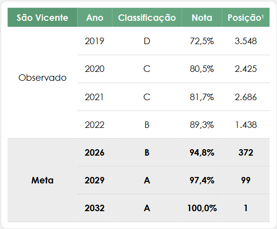
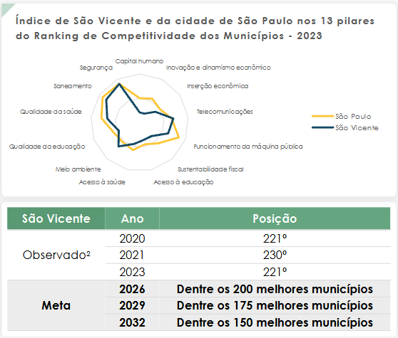

- A classificação CAPAG (Capacidade de Pagamento), feita pelo Tesouro Nacional, avalia a situação fiscal de estados e municípios a partir da análise de endividamento, poupança corrente e liquidez.
- As classificações A ou B permitem a contratação de novos empréstimos com garantia da União.
- Entre as classificações de 2018 e 2024, São Vicente em nenhum momento logrou o patamar A ou B, sendo 3 anos com classificação não disponível, e 4 com classificação C.
- As metas intermediárias, de 2026 e 2029, são de classificação B, o que significa o estabelecimento da cidade no grupo daqueles que podem contratar empréstimos com garantia da União.
- Já a meta final, de 2032, reflete o avanço econômico, fiscal e institucional de São Vicente, colocando o município com classificação A.

- O ICF (Indicador da Qualidade da Informação Fiscal e Contábil no Siconfi) é obtido pela análise da qualidade da informação e consistência dos relatórios e demonstrativos contábeis e fiscais enviados pela União, por estados e por municípios ao Tesouro Nacional.
- A nota é calculada como o percentual de informações avaliadas como corretas, e as classificações são obtidas pelo desempenho percentual obtido.
- São Vicente tem franca evolução de 2019 a 2022, passando de 72,5% (D) para 89,3% (B).
- Mantendo o retrospecto positivo e a evolução institucional da cidade, a meta final, de 2032, é de nota igual a 100% (todas as informações avaliadas como corretas). Esse valor foi obtido por dois municípios em 2022: Fortaleza – CE e Bozano – RS.
- A meta intermediária de 2026 (94,8% - B) equivale ao valor obtido pela melhor nota histórica de São Vicente, em cada informação; já a de 2029 é um valor intermediário entre as metas de 2026 e 2032, já com classificação A.

- O Ranking de Competitividade dos Municípios, produzido pelo Centro de Liderança Pública, analisa municípios com população acima de 80 mil habitantes¹. O estudo gera um indicador sintético, a partir de resultados de 65 indicadores, divididos em 13 pilares temáticos.
- Na edição de 2023, com a análise de 410 municípios, São Vicente ocupou a 211ª posição, com a nota de 49,95 (para fins de comparação, São Paulo ocupa o 2º lugar, com 64,39).
- Os destaques positivos de São Vicente foram nos pilares de Meio ambiente (33º) e Segurança (48º). As fragilidades relativas foram nas áreas de Acesso à saúde (366º) e Funcionamento da máquina pública (303º).
- Dada a pequena evolução do município entre 2020 e 2023, a meta final estipulada é que São Vicente passe a figurar, em 2032, no grupo dos 150 melhores municípios. Para as metas intermediárias de 2026 e 2029, que São Vicente integra o grupo dos 200 e dos 175 melhores municípios, respectivamente.